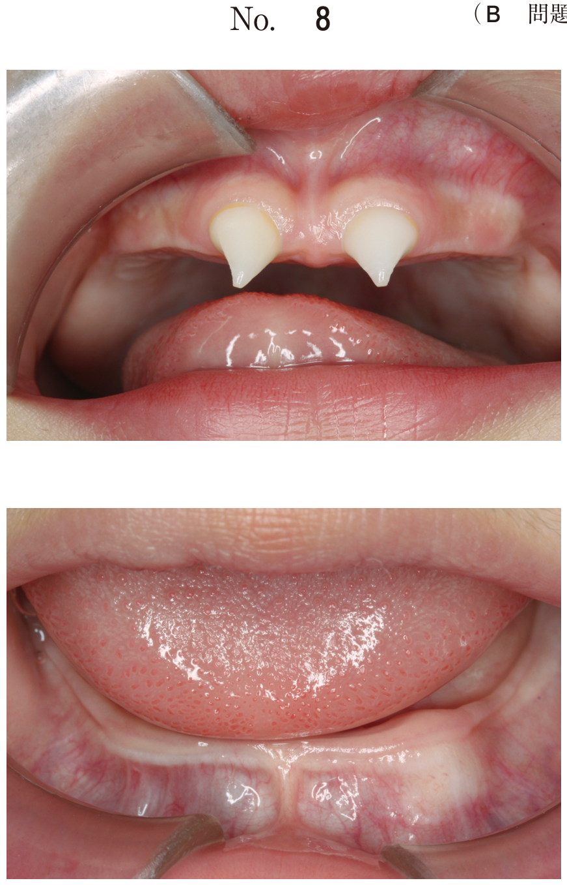
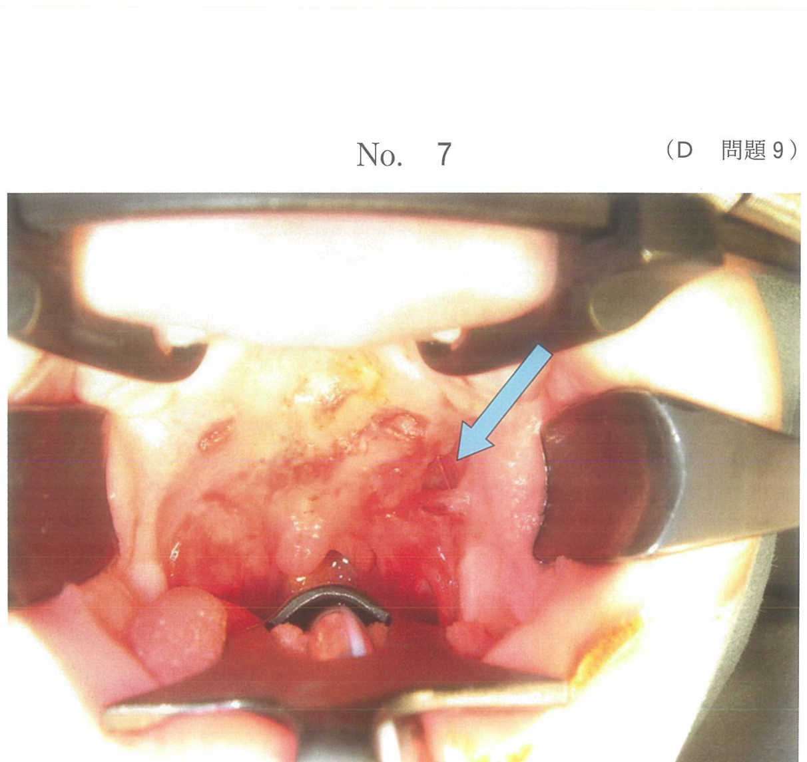
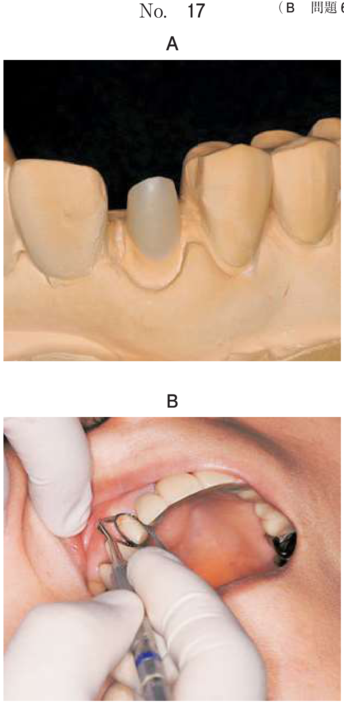

上顎洞炎
歯性上顎洞炎とは
上顎臼歯部の歯根は上顎洞底と近接しており、歯の疾患（根尖性歯周炎、歯周炎など）が原因となって上顎洞内に炎症を生じることがある。これを歯性上顎洞炎という。
原因歯
- 上顎第一大臼歯が最も多い（歯根が上顎洞底に最も近接）
- 次いで上顎第二大臼歯、第二小臼歯
- 根尖性歯周炎、歯周炎、抜歯後の上顎洞穿孔が原因となる
症状
| 病型 | 症状 |
|---|---|
| 急性 | 頬部の腫脹・圧痛、原因歯の自発痛・動揺・打診痛、鼻閉、膿性鼻漏、発熱 |
| 慢性 | 鼻閉、膿性鼻漏、嗅覚障害、頭痛、頭重感。原因歯の症状は軽度のことが多い |
急性期は炎症症状が顕著だが、慢性化すると全身症状は軽減し、鼻症状が主体となる。
検査
- パノラマエックス線：上顎洞の混濁、原因歯の根尖病変
- Waters法：上顎洞の混濁を両側比較で評価
- CT：洞内の詳細な観察、液貯留の有無、洞粘膜肥厚の程度
治療
治療の流れ
保存療法を3〜6か月行い、効果がなければ手術療法を検討する。
保存療法
- 薬物療法：抗菌薬投与（急性期はレボフロキサシン等、慢性期はクラリスロマイシン少量長期投与）
- 噴霧療法（ネブライザー）：抗菌薬、消炎薬の鼻噴霧
- 鼻洗浄
- 穿刺洗浄法：上顎洞を穿刺して膿汁を吸引・洗浄
- ヤミック療法：ラテックス製カテーテルで副鼻腔内の貯留液を排出
- 原因歯の処置：根管治療または抜歯
手術療法
| 術式 | 適応 | 内容 |
|---|---|---|
| 抜歯窩洗浄 | 原因歯抜歯後に上顎洞と交通がある場合 | 抜歯窩から上顎洞を洗浄。最も侵襲が少ない |
| 上顎洞根治術（Caldwell-Luc法） | 保存療法無効例、慢性化例 | 犬歯窩から開洞→病的洞粘膜を除去→下鼻道に対孔形成 |
| 内視鏡下副鼻腔手術（ESS） | 鼻性上顎洞炎、歯性の一部 | 鼻腔から内視鏡でアプローチ |
- 病的洞粘膜の除去：感染・炎症を起こした洞粘膜を掻爬・摘出
- 上顎洞の排泄路確保：下鼻道に対孔を形成して換気・排泄路を確保
犬歯窩の開窓は手術の「手段」であり「目的」ではない。原因歯の抜去も根治術の目的ではない。
対孔の形成部位
上顎洞根治術では、上顎洞の排泄路を確保するために下鼻道に対孔（交通路）を形成する。
中鼻道ではなく下鼻道。下鼻道は上顎洞の最下部に近く、重力による排泄に有利。
口腔上顎洞瘻閉鎖術
抜歯後に上顎洞と口腔が交通（口腔上顎洞瘻）した場合、自然閉鎖しなければ閉鎖術を行う。
閉鎖術の適応判断
- 排膿の消失：感染がコントロールされている
- 患側の自然孔の再開通：上顎洞の換気・排泄が回復
- 上記2条件を満たせば瘻孔閉鎖術を行える
閉鎖術の手技
- 頬側粘膜骨膜弁を挙上し、瘻孔を覆う
- 弁の張力を減らすために骨膜に減張切開を加える
- 減張切開により弁が伸展し、張力なく縫合できる
骨膜上剥離ではなく骨膜下剥離で粘膜骨膜弁を挙上し、骨膜に減張切開を加える。
過去問で実力チェック
歯性上顎洞炎で上顎洞根治術を施行する際、対孔を形成する部位はどれか。1つ選べ。
b 中鼻道
c 下鼻道
d 口腔前庭
e 翼口蓋窩
【解説】上顎洞根治術（Caldwell-Luc法）では、上顎洞の排泄路を確保するために下鼻道に対孔を形成する。下鼻道は上顎洞底に近く、重力による排泄に適している。中鼻道には自然孔があるが、対孔を形成するのは下鼻道である。
上顎洞根治術の目的はどれか。2つ選べ。
b 原因歯の抜去
c 病的洞粘膜の除去
d 肥厚鼻粘膜の切除
e 上顎洞の排泄路確保
【解説】上顎洞根治術の目的は病的洞粘膜の除去と上顎洞の排泄路確保（下鼻道への対孔形成）である。犬歯窩の開窓は手術のアプローチ法（手段）であり目的ではない。原因歯の抜去は根治術とは別に行う処置である。
34歳の女性。右側頰部の疼痛を主訴として来院した。1週前から同部に腫脹と疼痛が生じたという。上顎右側第一大臼歯は動揺度3であった。抗菌薬投与後に当該歯を抜去したところ、抜歯窩から排膿した。初診時のエックス線写真（別冊No.15）を別に示す。
次に行う処置はどれか。1つ選べ。

b Caldwell-Luc法
c 上顎骨部分切除術
d 犬歯窩からの開洞手術
e 抜歯窩からの上顎洞の洗浄
【解説】抜歯後に上顎洞と交通し、排膿を認める歯性上顎洞炎の症例。まず抜歯窩からの上顎洞洗浄を行い、消炎を図る。最も侵襲が少なく、この段階で十分な効果が得られることが多い。感染がある状態で抜歯窩を閉鎖してはいけない。Caldwell-Luc法は洗浄療法が無効な場合に検討する。
25歳の女性。上顎右側第一大臼歯の疼痛を主訴として来院した。当該歯に垂直破折が観察されたため抜歯を行ったところ、直径6mmほどの洞穿孔が確認された。エックス線検査で上顎洞に異常がみられないため、口腔上顎洞瘻閉鎖術を行うこととした。切開線（別冊No.9）を別に示す。
手術に当たり考慮するのはどれか。1つ選べ。

b 抜歯窩辺縁の骨削除
c 口蓋側粘膜の広域剥離
d 頬側粘膜弁の骨膜上剥離
e 頬側粘膜骨膜弁の減張切開
【解説】口腔上顎洞瘻閉鎖術では、頬側粘膜骨膜弁を挙上して瘻孔を覆う。弁を張力なく縫合するためには骨膜に減張切開を加えて弁を伸展させる必要がある。骨膜上剥離ではなく骨膜下剥離で粘膜骨膜弁を挙上する。頬脂肪体の補塡は大きな欠損に対する方法である。
52歳の女性。左側頬部の違和感を主訴として来院した。1年前から上顎左側第一小臼歯に痛みがあったが、そのままにしていたという。左側頬部に熱感と腫脹はない。検査の結果、抗菌薬投与と抜歯を行い、上顎洞と交通が認められたため洞内洗浄を実施した。初診時の口腔内写真（別冊No.26A）、エックス線画像（別冊No.26B）及び CT（別冊No.26C）を別に示す。
その後、口腔と上顎洞の交通を閉鎖できると判断する要件はどれか。2つ選べ。


b 排膿の消失
c 腐骨の分離
d 患側の自然孔の再開通
e 患側の上顎洞粘膜の肥厚
【解説】口腔上顎洞瘻閉鎖術を行えるかの判断には、排膿の消失（感染のコントロール）と患側の自然孔の再開通（上顎洞の換気・排泄機能の回復）を確認する。上顎洞粘膜の肥厚は炎症の残存を示唆しており、閉鎖の要件ではない。嚢胞や腐骨は本症例とは関係がない。